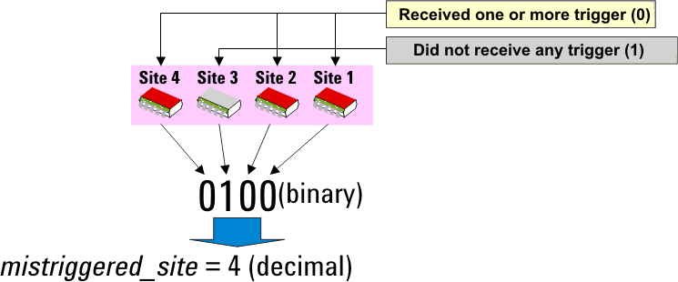

Error Handling on Missing Trigger Input
If many devices are tested such as in a production test, the data captured by analog measurement modules (digitizers and samplers) in the previous device test is kept in the waveform memory of the modules until the next device test captures then stores new data into different memory areas. If a module has not received any trigger in a device test owing to some unexpected trouble, the measurement by the module is not performed. But, the test program reads the captured data of the previous device test from the module then judges the result from the data as if the measurement is really performed.
To avoid this problem, the following digitizers/samplers have a status to indicate whether each digitizer/sampler module (or each measure unit of each MCA/MCB/MCC/MCE module) has been triggered once or more times in a test (0) or not (1). This status can be read via test method API (or firmware). The status of all the analog modules listed below will be initialized to "1" when the FLUSH API or the APIs (such as EXECUTE_TEST) that call the FLUSH API internally.
- MCA Audio Digitizer (ADGT) / Video Digitizer (VDGT)
- MCB LF Digitizer / VHF Digitizer
- MCC Sampler
- MCE LF Digitizer / VHF Digitizer
In the test method program, the status of all the analog modules listed above will be read by the EXECUTE_TEST or WAIT_TEST_DONE API at the end of the execution of these APIs. The following table shows when the status of the analog modules listed above is initialized and read for each API.
API |
When analog module status is initialized |
When analog module status is read |
|---|---|---|
EXECUTE_TEST |
At the beginning of the EXECUTE_TEST API execution |
At the end of the EXECUTE_TEST API execution |
START_TEST, DIGITAL_CAPTURE_TEST |
At the beginning of these APIs' execution |
At the end of the WAIT_TEST_DONE API execution |
Other APIs that start the digital sequencer |
At the execution of the FLUSH API that is used to activate the primary analog set |
At the end of the WAIT_TEST_DONE API execution |
The status read will be returned to the mistriggered_site parameter of the EXECUTE_TEST or WAIT_TEST_DONE API. The following shows an example program of error handling using this functionality.
START_TEST();
WAIT_TEST_DONE(1 sec,&Time_out,&Trig_state);
if(Trig_state != 0){
cout << "One or more digitizer/sampler has not
received any trigger." << endl;
TEST("","",TM::Fail,0);
}
The status to be returned to the mistriggered_site parameter of the EXECUTE_TEST or WAIT_TEST_DONE API depends on the types of analog modules and operating mode (online/offline) as in the table below:
Module type |
In online mode |
In offline mode |
|---|---|---|
MCA (ADGT/VDGT), MCB, MCC, MCE |
Returns whether the module (or the measure unit of the MCA/MCB/MCC/MCE module) has been triggered once or more times (0) or not (1) |
Returns whether the trigger signal input is enabled (0) or disabled (1) |
Error handling in multi-site tests
In the multi-site test, put the EXECUTE_TEST or START_TEST API (with WAIT_TEST_DONE) into the ON_FIRST_INVOCATION_BEGIN and ON_FIRST_INVOCATION_END.
EXECUTE_TEST checks whether each site has received one or more triggers (0) in a test or not (1) and generates a binary number to indicate the status for each site. The order of the expression corresponds to the site numbers and the lowest bit specifies the site 1. Then the binary number will be returned to tout_site_flag variable in decimal value as in the figure below.

To check whether the status for each site is "1" or "0" in the test method program, shift the bit for the target site to the lowest bit by using the operator ">>" as shown in the following example.
static INT tout_site_flag, mis_trg_site, site_num;
:
ON_FIRST_INVOCATION_BEGIN();
:
EXECUTE_TEST(100 ms,&tout_site_flag,&mis_trg_site);
:
ON_FIRST_INVOCATION_END()
:
site_num = CURRENT_SITE_NUMBER();
if((mis_trg_site>>(site_num -1))&1){
cout << "Timeout error has occurred on site"
<< site_num << endl;
TEST("","",TM::Fail,0);
}
:In
the above example, EXECUTE_TEST checks whether each site has received one
or more triggers (0) in a test or not (1) and returns the status to
mis_trg_site variable.
(mis_trg_site>>(site_num -1))&1 is a statement for checking whether the status of the query focus site is "1" or not. On bit calculation, values are processed as binary number. ">>" is a operator to shift the bit to the right for the digit specified with "site_num -1". By this bit calculation, the bit for the query focus site will be shifted to the lowest bit. The lowest bit will be compared to "1" by the operator "&1".
TEST("","",TM::Fail,0) is a statement for judging the test as "FAIL" when the status of the misstriggered_site parameter for the query focus site is "1".
Functional changes
- Introduced before SmarTest 6.3.2
- SmarTest 7.1.2: Support of MBAV8+.